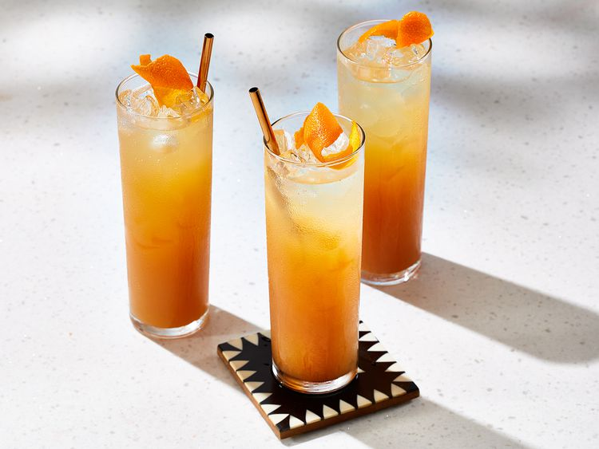

Home
Sicilian Sunset

This colorful Sicilian-style drink will brighten
up any party. You can also make it non-alcoholic
by replacing prosecco with Sprite.
Ingredients
- 2 cups ice cubes
- 1 cup Prosecco or Sprite
- 1 cup orange juice
- 1 cup cranberry juice
- 2 lemons, zested
Steps
- Place ice in a glass pitcher.
- Pour in Prosecco or Sprite,
orange juice, and cranberry juice.
- Stir
- Pour into champagne flutes, and sprinkle
with lemon zest to serve.
- Enjoy!